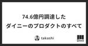

ダイニーなプロダクト
https://note.com/dinii/m/mf6424286cfa2
ダイニーのプロダクトの発信をまとめています。 Zenn に ダイニー Tech Blog ( https://zenn.dev/p/dinii ) をオープンしました 。 ダイニーのプロダクト開発や開発組織、どんなプロダクトなのか、どのように開発しているのかについて書いているブログです。
フィード

74.6億円調達したダイニーのプロダクトのすべて 1
1
ダイニーなプロダクト
こんにちは。ダイニーPMの takashi です。ダイニーは 74.6億円 の資金調達を実施して、 これまでのPOS・モバイルオーダーの会社から、Fintech や HR 領域にも進出することを発表しました。今回は、ダイニーがどんな事業・プロダクトに取り組んでいるのかを紹介します。以前、「ダイニーっておもしろいの？1人目PMが語る”これまで”とこれから”」という記事を書きました。 このときは、取り組んでいる新規事業をまだお話できなかったのですが、遂に話せるようになりました！！（ずっと話したかった…！）はじめに続きをみる
7日前

4年前にお見送りされたダイニーに今入社した3つの理由
ダイニーなプロダクト
はじめまして！7月からダイニーのプロダクトマネージャー（以下PdM）として入社したHinoshitaです。ダイニーは5社目になるのですが、これまではメルカリ（ソウゾウ/メルペイ）地域コミュニティアプリ「メルカリ アッテ」即時買取サービス「メルカリNOW」スマホ決済サービス「メルペイ」favyグルメメディア「favy」menuデリバリー＆テイクアウトアプリ「menu」トレタ予約台帳サービス「トレタ」モバイルメニュー「トレタO/X」AI電話予約サービス「トレタ予約番・AIるすでん」続きをみる
18日前
【React】なぜコンポーネントの中でコンポーネントを作るのは良くないのか？
ダイニーなプロダクト
こんにちは、ダイニーの Feature team でソフトウェアエンジニアをしている ta21cos です。最近は新規事業である決済関連の機能の開発をメインに行なっています。ダイニーにおける Feature team は機能にフォーカスした開発・運用を行っているチームです。最近は複数の事業毎に Unit として分かれて開発を進めています。本日は、普段の開発で実際にあった Pull Request のレビューコメントから得た学びについて紹介します。Dialog を実装しよう続きをみる
1ヶ月前
スタートアップで育休とるならこれくらいはやっておくこと3選
ダイニーなプロダクト
ダイニーのプロダクトマネージャーの武本です。こんにちは。こんばんわ。プロダクトマネージャーとは、製品の企画から開発、販売までを総合的に管理し、製品の成功に導く役割を担う職種です。私はいま新規プロダクトの立ち上げから、PMFに向けて現在邁進中です！！！私は昨年の10月に第一子が誕生し、同11月から翌年1月まで3ヶ月間育児休業を頂いておりました。うまれたて！！続きをみる
2ヶ月前
入社して3ヶ月で100人と飲んだPdMの話
ダイニーなプロダクト
みなさま、こんにちは。ダイニーのプロダクトマネージャー（以下、PdM）のokuraです。2024年4月よりダイニーに入社し、3ヶ月が経ちました。怒涛の3ヶ月であり、気づいたら風のように過ぎ去っていたのですが、ここで振り返らせていただくことで、今後の糧にしたいと思います。この記事はダイニーのPdMって入社してどんなことするの？入社3ヶ月のPdMにとってダイニーはどんな会社？3ヶ月を経ての総括とこれから続きをみる
3ヶ月前
正しい事象を正しく見る - 本当の課題を特定するための、定量と定性の使い分け事例 -
ダイニーなプロダクト
みなさま、こんにちは。株式会社ダイニーのプロダクトマネージャーをしているokuraです。ダイニーに入社し約半年ほど経つ中で様々なissueに取り組んできました。そのissueの解決は全てがスムーズに進められた訳ではなく、それなりの失敗もありました。今回はそんな失敗の数々の中から、顧客の要望をきっかけとした課題の発見そして解決に至るまでの私の失敗と学びを取り上げさせていただきます。顧客の声や要望はプロダクト開発における大切な資産ではありますが、取り扱い方や打ち手によっては誤ったプロダクト開発をしてしまうこともあります。そのようなことに陥らないためにも是非この記事を参考にしていただければ幸いです。続きをみる
2ヶ月前
ダイニーモバイルオーダーの多言語対応の裏側 (Cloud Natural Language API の利用例)
ダイニーなプロダクト
こちらの記事は Zenn にも公開しています。 ダイニーモバイルオーダーの多言語対応の裏側 (Cloud Natural Language API の利用例)zenn.dev 続きをみる
2ヶ月前
『システムコストレポート』 〜経営とエンジニアリングの橋渡し〜
ダイニーなプロダクト
こんにちは、ダイニーで VP of Technology というロールを担っている karszawa です。本日は、ダイニーの Platform Team が運用している『システムコストレポート』について紹介します。続きをみる
2ヶ月前
「まずはとにかくドメイン知識！」スタートアップがエンジニアインターン生を即戦力に導く戦略
ダイニーなプロダクト
こんにちは！株式会社 dinii (ダイニー) / Data team テックリードの kimujun です。ダイニーのエンジニアリング部では、今年から学生インターンの受け入れを始めました。現在ジョインから半年ほどですが、全員が十分にタスクを任せられるような状態まで成長してくれたため、初年度の受け入れは今のところ大成功です！この記事では、リソースの少ないスタートアップが最速でインターン生を戦力化するための戦略と、実践の記録を記します。ちなみに…スタートアップでインターンをすることの意味について続きをみる
2ヶ月前
System Risk Records を用いたシステムリスク管理
ダイニーなプロダクト
ダイニーの @urahiroshi です。先日、SRE NEXT 2024にて「プロダクトのスケールによって顕在化しうるリスクをどう管理するか？」というテーマで登壇しました。この際に紹介した “System Risk Records” というドキュメントを用いた運用フローについて、この記事でも簡単に紹介するとともに、SRE NEXT の登壇後に挙がった質問などから補足情報を記載します。 続きをみる
2ヶ月前
脱JIRA！Notionで実現する最強のプロダクトマネジメント
ダイニーなプロダクト
こんにちは。JIRA 愛用者だった @takashi です。そんな JIRA を辞めて、Notion で最強のプロダクトマネジメントを実現しました！💡 プロダクト開発の一連の管理を Notion で実現！・JIRA と同じことはもちろん、それ以上に便利なことができる！・自動化や連携で仕事が10倍快適になる！なめらか！・Notion の新機能を使って、誰でも簡単に用意できる！続きをみる
2ヶ月前
POS レジで飲食店を支えるダイニーの障害対策：第二回 データ永続化で実現する React Native 製レジのオフライン対策
ダイニーなプロダクト
ダイニーの whatasoda です。前回記事に続いて、第二回となる今回はデータ永続化で実現する React Native 製レジのオフライン対策と題して、システムに障害が発生しても最低限のオペレーションをレジ単体で実現するガチャレジ機能についてご紹介します。ガチャレジとは、レジとして最低限の機能であるお金の管理に対応しているレジのことを指す俗称です。ダイニーがサービスを提供する飲食店ではお金の管理だけの機能では満足な営業を行うには不十分なため、この連載の中での「ガチャレジ」という表現は最低限の注文管理と会計機能を備えたレジまたはそのような振る舞いをする機能のことを指します。なぜお金の管理だけでは営業できないのか、どうしてガチャレジ対応が必要なのかについての説明は第一回の記事をご覧ください。 モバイルオーダー一体型 POS レジで飲食店を支えるダイニーの障害対策：第一回 POS レジの重要性と障害の原因zenn.dev 続きをみる
2ヶ月前
モバイルオーダー一体型 POS レジで飲食店を支えるダイニーの障害対策：第一回 POS レジの重要性と障害の原因
ダイニーなプロダクト
こんにちは。whatasoda です。ダイニーではプロダクトの開発に用いるプログラミング言語を TypeScript に統一しており、事業の中核であるモバイルオーダー一体型オンライン POS レジのアプリケーションを React Native で開発しています。モバイルオーダー一体型オンライン POS レジにおいて何が障害となり得るのか、ダイニーがこれまでそれらの障害とどのように向き合ってきたのか、これから先どのように向き合っていくのかについて、連載記事でまとめていきます。初回となる今回は、レジがダイニーと飲食店それぞれにとって如何に重要なのか、そして障害が起きるとどれだけの影響があるのかという、障害対策の前提知識の部分についてご説明します。POS データは飲食店の要続きをみる
3ヶ月前
Letter for Data Engineer
ダイニーなプロダクト
こんにちは！ダイニー Data team テックリードの kimujun です。最近は BigQuery Data Canvas に衝撃を受け、社内にちょっとずつ布教するなどの活動をしています。この記事ではダイニーの Data team がどのような未来を描き、その未来の実現に向けてどのような取り組みを考えているのかを、主に採用候補者の方に向けてお伝えしたいと思います。ダイニーとは続きをみる
3ヶ月前
成長を加速する組織
ダイニーなプロダクト
ダイニー Engineering Manager の urahiroshi です。ダイニーのエンジニア組織は今まさに組織拡大中であり、今後どのような組織にしていきたいのか、そのために何が必要なのかといったところを日々考えています。現在のエンジニア組織については、以下のページのculture deckを参照ください。 dinii エンジニア採用情報 | NotionCulture Deck for Software Engineerdiniinote.notion.site 続きをみる
3ヶ月前
ダイニーが Prettier のスポンサーになりました！ 🎉
ダイニーなプロダクト
こんにちは、ダイニーで VP of Technology を務めている karszawa です。本日は、ダイニーが開始した Prettier という OSS への寄付（スポンサー）について説明したいと思います。ダイニーが Prettier のスポンサーになりました 🎉続きをみる
3ヶ月前
モノレポで JavaScript のローカルパッケージをいい感じにできる『tamashii』というツールを作った話
ダイニーなプロダクト
こんにちは。dinii の whatasoda です。モノレポで JavaScript のローカルパッケージをいい感じにできる『tamashii』というツールを作ったので作るに至った背景や機能についてまとめました。モノレポとローカルパッケージ続きをみる
3ヶ月前
「質問するな、動画を撮れ」ダイニーの圧倒的顧客思考によるプロダクト開発の鉄則
ダイニーなプロダクト
こんにちは。こんばんは。ダイニーのプロダクトマネージャーの武本です。最近はダイニー社内で社外発信が活発になってきているので、頑張って発信をしていきます！ダイニーについて続きをみる
4ヶ月前
インシデントの「予防」「対応」「振り返り」を磨き込む！
ダイニーなプロダクト
＜dinii Tech Blog (https://zenn.dev/p/dinii) をオープンしました。技術的な記事はTech Blogに掲載していきますので、ぜひこちらもフォローください！＞dinii は、飲食店での注文・会計といったミッションクリティカルな業務を行うためのプロダクトを開発・運用しています。こうしたプロダクトで障害が発生してしまうと、飲食店が営業できなくなってしまうほどのインパクトがあるため、プロダクトの信頼性・可用性・保守性を高めるための活動を積極的に行なっています。そういった活動の中心になっているのが、「インシデント対応」です。dinii が行っているインシデント対応を整理すると、「インシデント発生前」「インシデント発生中」「インシデント発生後」のそれぞれのタイミングにおける運用を洗練するための取り組みを行なっており、大まかに記載すると以下のようになります。インシデント発生前: インシデントのリスクを検知・予防するためのアクションインシデント発生時: インシデントに迅速に対応するためのアクションインシデント発生後: インシデントを振り返り、今後の学びとするためのアクション続きをみる
4ヶ月前
dinii における緊急事態とその訓練について
ダイニーなプロダクト
こんにちは。Platform Teamで SWE をしている @HagaSpa です。dinii （ダイニー）では大規模障害が発生した状況を模した訓練を定期的に行っており、今回はその活動について紹介したいと思います！緊急事態訓練とは？続きをみる
4ヶ月前
dinii における Terraform の改善活動
ダイニーなプロダクト
こんにちは。Platform Teamで SWE をしている 芳賀@HagaSpa です。dinii では IaC として Terraform を使っており、今回はその改善について取り組んだことを書きたいと思います。TL;DR続きをみる
10ヶ月前
インフラコスト削減ステップ ~ダイニーのGCP Projectを例として~
ダイニーなプロダクト
ダイニーの @urahiroshi です。この記事では、ダイニーで行なっているインフラのコスト削減プロセスを例として、コスト削減をどのように進めていくと良いか解説したいと思います。フィードバック等あればぜひご連絡ください！コスト削減ステップ1. コストレポートの作成続きをみる
5ヶ月前
dinii (ダイニー) はコンパウンドスタートアップです
ダイニーなプロダクト
dinii でテックリードをしている谷藤です。今回は dinii が取り組んでいるコンパウンドスタートアップ戦略について、主にプロダクト面から解説をしたいと思います。余談ですが、dinii の入社エントリを書いてから 2 年以上経過しましたが、dinii で働く毎日は非常に刺激的で楽しくて本当に入社して良かったとずっと思っています、dinii サイコーです！！続きをみる
5ヶ月前
dinii, estie, ナレッジワークの三社で「開発体制・プロセス」についての勉強会を行いました
ダイニーなプロダクト
先日、dinii、株式会社estie、株式会社ナレッジワークの三社間で「toBスタートアップの開発体制・プロセス」についての合同勉強会を行いました。当初は一般の参加者も募るイベントとして企画していたのですが、諸般の都合により一般公開は中止しました。しかし、マルチプロダクト展開を行うtoBスタートアップとして共通している三社であり、せっかくの機会なので三社間の勉強会として改めて開催したものです。estie 社に会場をお貸しいただき、三社で10名強の参加者が集まりました。まずは雑談から始まり、それから各社の取り組み紹介と質疑応答を行いました。簡単にですが、各社の取り組みと質疑応答の内容について、こちらでシェアできればと思います。続きをみる
7ヶ月前
Letter for SWE (Platform Engineering)
ダイニーなプロダクト
はじめまして、株式会社 dinii (以後ダイニー) で VP of Technology というロールを担っている karszawa と申します。この度、ダイニーで SWE (Platform Engineering) という新規の採用ポジションを公開しました。ダイニーでは全てのプロダクトで統一の技術（Node.js, React, Cloud Run, PostgreSQL）を採用しており、ソフトウェアの基盤部分を整理することによるスケールメリットが非常に大きいです。この記事では、そんなダイニーにおける基盤開発を担うこのポジションへの期待や「やりがい」について説明します。続きをみる
7ヶ月前